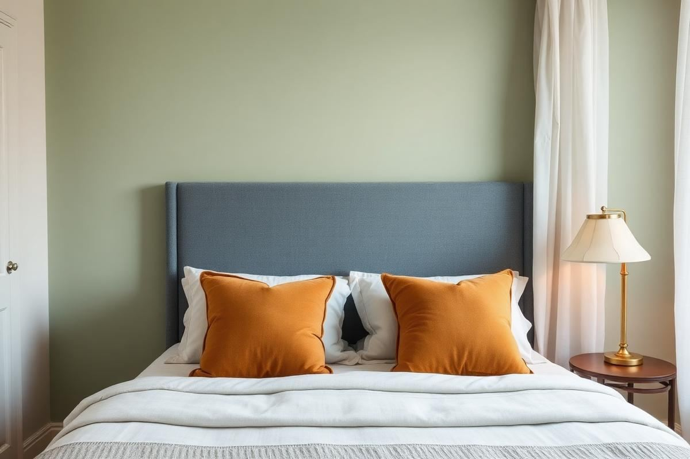

Bedroom Color Ideas: Restful Palettes That Work

Bedroom Color Ideas: Restful Palettes That Work is one of those topics where a little planning goes a long way. In this guide I walk through the process we use in real homes — not just what looks good in a photo, but what actually holds up over time.
Start here
Before you buy or move anything, measure the space and note how you actually use it. The best-looking room is one that matches how you live, so start with the routines: where you sit, where you drop keys, where the light falls in the afternoon.
The essentials
Focus on the pieces that do the most work. Get those right and the rest of the room comes together with much less effort. Aim for materials that patina rather than degrade, and colors you will still like in five years.
- Choose one clear focal point per room.
- Pick materials that improve with age.
- Layer textures instead of adding more colors.
- Leave visual breathing room — negative space is a design element.
Common mistakes
The mistakes we see most often are matching everything too tightly, over-scaling accessories, and skipping proper lighting. Fix those three and most rooms improve overnight.

Mastering Undertones: The Hidden Gamemaster
The single most overlooked aspect when selecting bedroom color ideas is understanding undertones. A seemingly 'cool' gray can have a hidden green undertone that clashes violently with your beige curtains (warm, yellow undertone). This invisible clash creates a subtle, unsettling disharmony. To identify undertones, hold paint swatches against a pure white sheet of paper in natural light. Does the 'gray' lean slightly blue, green, or purple? Does the 'beige' appear a touch pink, yellow, or orange? Most paint companies categorize their neutrals as 'cool' or 'warm' but their internal formulas are more nuanced. Always test large swatches (12x12 inches minimum) from actual paint chips on your wall, observing them at different times of day. A sample pot, costing approximately $7-10, is a non-negotiable step before committing to a gallon.
For example, Sherwin-Williams 'Agreeable Gray' (SW 7029) is a popular greige but possesses a definite warm, yellow-green undertone. If pairing with a cool-toned bedding like a true ice blue, it can feel off. Instead, a gray with a blue or purple undertone, like Benjamin Moore 'Stonington Gray' (HC-170), would create a cohesive cool palette. Conversely, if your existing furniture is largely cherry wood (red undertone), a beige with a pink undertone, such as Farrow & Ball 'Elephant's Breath' (No. 229), will complement beautifully. Ignoring undertones leads to disjointed spaces, sacrificing thousands in paint and redecorating costs later. Invest the time upfront.
The Power of the 50-30-20 Rule
Applying the 50-30-20 rule to your bedroom color ideas ensures a balanced and visually appealing space. This widely-used interior design principle dictates the proportion of your chosen colors. 50% should be your dominant color, often applied to walls, large rugs, or major furniture pieces. This is your anchor hue. For a tranquil bedroom, this is typically a neutral or a very muted, desaturated color like a soft sage green, a warm off-white, or a pale blue. Let’s imagine a bedroom painted in Benjamin Moore ‘Pale Oak’ (OC-20), a warm greige, covering 50% of the visual space.
30% should be your secondary color, introduced through curtains, a headboard, bedding, or a large armchair. This color complements the dominant hue and adds depth. If our dominant color is Pale Oak, a secondary color could be a muted denim blue in linen curtains or an upholstered headboard. The final 20% is your accent color, used sparingly to add pops of personality and prevent monotony. This could be throw pillows, artwork, decorative objects, or a small plant pot. Here, we might see ochre yellow throw pillows and a brass lamp. This deliberate distribution prevents any single color from overwhelming the space and guides your eye harmoniously, leading to truly effective bedroom color ideas.
Strategic Statement Walls
A statement wall is a potent element in bedroom color ideas, but its execution requires precision. It's not just about painting one wall a different color; it's about intentional design. Your statement wall should ideally be the wall your bed is on, as this is the natural focal point upon entering the room. This placement immediately anchors the bed and grounds the sleeping area. For small bedrooms (under 100 sq ft), a dark, saturated color on the statement wall can surprisingly make the room feel larger by creating depth, rather than making it feel smaller. Think Farrow & Ball 'Hague Blue' (No. 30) or even a deep charcoal like Benjamin Moore 'Kendall Charcoal' (HC-166).
- Always consider the amount of natural light on the statement wall. A windowless wall can handle a darker, richer hue.
- Ensure the statement wall color has a clear relationship (complementary or analogous) with the other wall colors. For example, a deep forest green statement wall pairs beautifully with soft cream or light gray walls.
- Texture can elevate a statement wall: consider grasscloth wallpaper (averages $50-100 per roll, professional installation $400-800) or even reclaimed wood panels for a rustic touch.
Avoid placing a statement wall on a wall with multiple doors or windows, as this disrupts the visual impact. The goal is a clean, uninterrupted expanse of color or texture to draw the eye. A well-executed statement wall acts as a powerful design tool, defining the room's character and elevating your bedroom color ideas from simple paint choices to sophisticated design decisions.
Lighting: The Unseen Color Shifter
No discussion of bedroom color ideas is complete without addressing lighting. Light sources dramatically alter how colors appear. A paint color chosen under cool fluorescent light at a hardware store will look drastically different under warm incandescent bulbs or natural daylight in your bedroom. This is why testing paint swatches on your wall is paramount, observing them at different times, morning through evening.
Evaluate your existing light bulbs. Are they 'soft white' (2700K-3000K, warm, yellowish), 'bright white/cool white' (3500K-4100K, more neutral, slightly blue), or 'daylight' (5000K-6500K, sharp, blue-white)? A warm 'soft white' bulb will deepen warm paint colors and neutralize cool tones, potentially making a true blue appear grayer. Conversely, 'daylight' bulbs will make cool colors pop and can make warm colors appear harsher or washed out. For bedrooms, a color temperature between 2700K-3000K is generally recommended for a cozy, relaxing ambiance. This warmth will complement most restful bedroom color ideas. Invest in dimmable smart bulbs (around $15-25 each for a basic model) to precisely control both brightness and color temperature, allowing you to fine-tune the mood and color perception throughout the day and night.
Remember, natural light exposure is critical. North-facing rooms receive cooler, consistent light, making warm colors feel cozier and cool colors potentially feel icy. South-facing rooms get bright, warm light, which can amplify warm colors and balance out cool hues. East-facing rooms get warm morning light, while west-facing rooms get warm afternoon light. Plan your choices accordingly: embrace the light, don't fight it.
Key takeaways
- Match the room to how you actually live.
- Anchor with one main piece and clear lighting.
- Layer textures, not colors.
- Leave breathing room around every object.
Frequently asked questions
Where should I start?
Start with the largest piece and the light. Everything else — art, textiles, small objects — is easier to place once those two anchors are set.
What is a realistic budget?
Prioritize the pieces you touch every day. Spend more on those and less on decorative items, which are easy to swap over time.
How long should this last?
A well-chosen main piece should last 10–15 years. Refreshes come through textiles, art, and accessories, not full replacements.

Sophia Bennett is a certified interior stylist and the senior editor at Styleire. She has spent more than eight years helping homeowners and renters create warm, functional interiors, with hands-on experience across small city apartments and family homes. Her work has been informed by close collaboration with independent designers, craftspeople, and product testers.
View full profile →Related reading

Cozy Bedroom Ideas: 12 Changes That Actually Make a Difference
Cozy is a feeling built from small, specific choices. Here are the twelve that make the biggest difference.

How to Build a Warm Neutral Color Palette for Your Home
Warm neutrals are the safest and most flattering base for a whole-home palette. Here is how to build one on purpose.

Bedroom Lighting Guide: Warm, Layered, and Calm
Bedroom Lighting Guide: Warm, Layered, and Calm — a clear, editor-tested guide covering the essentials without the filler.